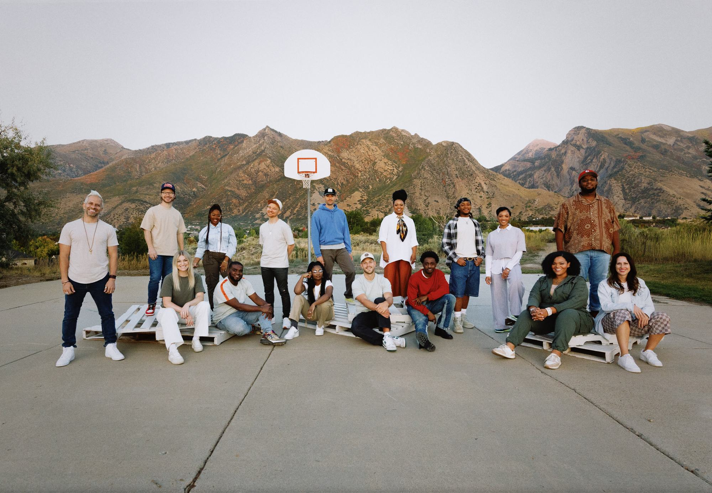
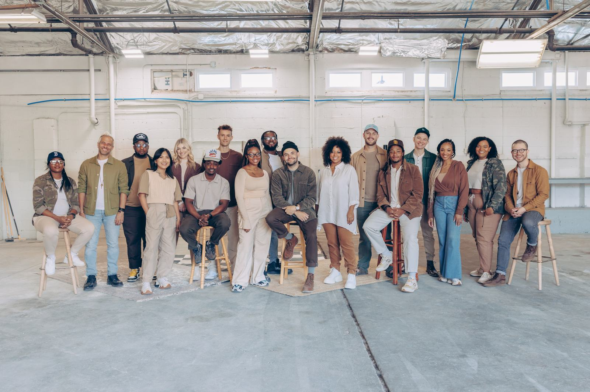

About us
About us
A collectivefor theneighborhood.
We’re a collective of songwriters, producers, musicians and creatives. Our biggest goal is to create loving, honest, vulnerable and safe spaces where anybody, including ourselves, can connect with God, others and self, no matter where they are in their journey.
Say hello
The mark
Crown& lily
Our logo was designed to communicate the welcoming, yet bold and majestic, presence of the King.
The icon is a hybrid of the crown and the lily, a symbol of Jesus’ finished work on the cross, His Kingship, and His tender, pure and caring nature as the “lily of the valleys” (Song of Solomon 2:1), who invites us to rest in Him and “consider the lilies of the field” (Matthew 6:28).
How weshow up
The language of belonging: welcoming, inviting and inclusive. Here’s how we try to talk with everybody in the neighborhood.
We listen first
We don’t try to fix, solve or prescribe before we’ve really heard you.
Step zero
We respect where everybody might be in their journey, including the very beginning.
Not preachy
No “we have all the answers, so follow us.” Just humble, nonjudgmental conversation.
Honest & vulnerable
Being real with each other is what makes a space feel safe.
Stories over debates
We share our stories and amplify yours. It keeps us in the realm of relationship.
Fun & light-hearted
We don’t take ourselves too seriously, and we laugh a lot.
Colors of theneighborhood
Our palette reflects our core values: relationship, community, unity, growth, acceptance, safety, love and connection. It’s made of the colors you might see on a walk through the neighborhood.
